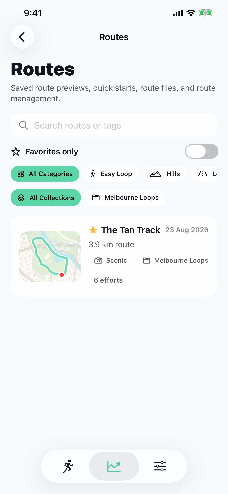

Route Memory 2.0
A familiar route becomes personal training context.
Save a route, import earlier workouts or let Trail IQ recognise a familiar path. Comparable efforts of the same activity type build an explainable picture of the route and how you tend to handle it.
- Stable sections based on terrain and repeated performance changes
- Best, latest and typical times for familiar routes
- Multiple recurring slowdowns, strengths, climbs, recoveries and finish patterns
- A ranked lookahead of the few upcoming moments worth knowing about
- Personal claims only when enough comparable evidence supports them
- Conservative guidance for new, partial or reverse route matches
